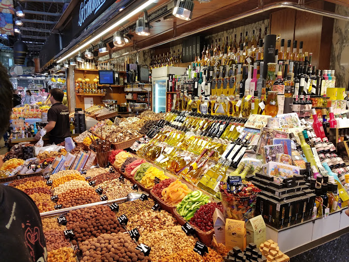
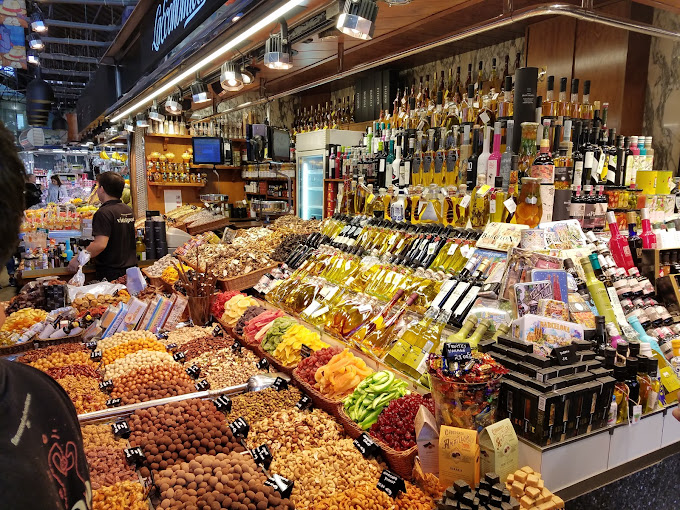

TOURIST SPOT
MERCADO DE LA BOQUERIA
• The Mercat de Sant Josep de la Boqueria, usually simply referred to as La Boqueria, is a large public market in the Ciutat Vella district of Barcelona, Catalonia, Spain, and one of the city's foremost tourist landmarks, with an entrance from La Rambla, not far from the Liceu, Barcelona's opera house.
 
